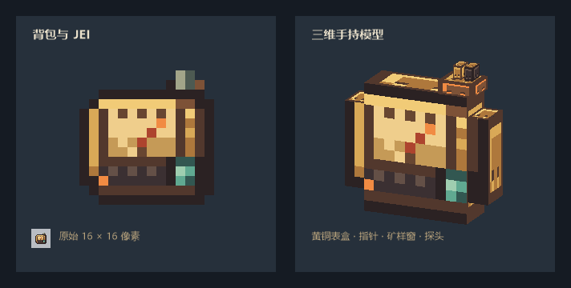

探索世界
主世界
风暴过后的大陆是船队的起点。地面工坊沿矿区向港口扩建，主世界同时承担早期金属、燃料、深海农业和跨维度补给。
到达方式
- 从世界出生点开始。
- 主世界的地面港口可作为补给基地。
- 末影之眼定位原版要塞，第六章的寻门之眼在主世界定位永恒星光的原生门址。
矿物分布
- 赤铁矿和孔雀石支撑初代铁、铜。闪锌矿和锡石分别供应黄铜和青铜。镍黄铁矿与铝土矿可以早采，蒸汽工坊开放其正式选冶产线。
- 主世界可从朱砂取得红石，并开采煤、金与多种宝石。天然油池可为第四章分馏线供原油，炼出柴油等产物。铂料到第七章进入深银热风高炉。
- 新生成的深海偶尔可见水柱达 200 格的海沟。沿较浅的海床台地寻找野生灯藻和盐根。

矿床分布表 21 条记录
| 矿床 | 分布区域 | 矿层高度 | 矿物与产出 |
|---|---|---|---|
| 磁铁矿脉 | 实矿结构，山地群系标签、风袭丘陵、风袭沙砾丘陵、林荫高地、彩绘山地、裸岩尖峰、多岩山地、西伯利亚雪林。每 104 × 104 区块网格有一个候选，频率判定 100%。 | 矿芯约在生成时地表面下 33 格，为相对深度。 | 地形裁切前共 5,397 至 5,641 块矿石。磁铁矿 5,397 至 5,641 块（约 100%）。矿机登记产物为粗磁铁矿。 |
| 铜矿脉 | 实矿结构，恶地群系标签、热带草原群系标签、沙漠、沙漠峡谷、沙漠尖峰、灌丛地、砂岩峡谷、远古沙地、干旱高地、奇异恶地。每 100 × 100 区块网格有一个候选，频率判定 100%。 | 矿芯约在生成时地表面下 20 格，为相对深度。 | 地形裁切前共 4,954 至 5,256 块矿石。孔雀石 3,061 至 3,217 块（约 61.2% 至 61.8%）、辉铜矿 741 至 816 块（约 15% 至 15.5%）、黄铜矿 1,152 至 1,223 块（约 23.3%）。矿机登记产物为粗孔雀石、粗辉铜矿、粗黄铜矿。 |
| 石灰岩锌矿脉 | 实矿结构，桦木森林、原始桦木森林、繁花森林、风袭森林、石岸、白色峭壁、白色平顶山、约塞米蒂峭壁、温带高地、薰衣草森林、薰衣草峡谷、地盾、地盾空地。每 100 × 100 区块网格有一个候选，频率判定 100%。 | 矿芯约在生成时地表面下 25 格，为相对深度。 | 地形裁切前共 5,507 至 6,229 块矿石。菱锌矿 3,355 至 3,805 块（约 60.9% 至 61.1%）、闪锌矿 2,152 至 2,424 块（约 38.9% 至 39.1%）。矿机登记产物为粗菱锌矿、粗闪锌矿。 |
| 深层红石矿脉 | 实矿结构，针叶林群系标签、沼泽、红树林沼泽、兰花沼泽、冰沼、冬雪低地、白桦针叶林、西伯利亚针叶林、寒冷灌木带。每 108 × 108 区块网格有一个候选，频率判定 100%。 | 矿芯约在生成时地表面下 36 格，为相对深度。 | 地形裁切前共 5,507 至 5,823 块矿石。含朱砂红石 5,507 至 5,823 块（约 100%）。矿机登记产物为粗朱砂。 |
| 煤系矿脉 | 实矿结构，主世界群系标签。每 48 × 48 区块网格有一个候选，频率判定 88%。 | 矿芯约在生成时地形面（陆地表面或水底）下 22 格，为相对深度。 | 地形裁切前共 2,231 块矿石。煤 1,384 块（约 62%）、赤铁矿 324 块（约 14.5%）、孔雀石 523 块（约 23.4%）。矿机登记产物为煤炭、粗赤铁矿、粗孔雀石。 |
| 铁质矿脉 | 实矿结构，主世界群系标签。每 72 × 72 区块网格有一个候选，频率判定 79.2%。 | 矿芯约在生成时地形面（陆地表面或水底）下 38 格，为相对深度。 | 地形裁切前共 2,136 块矿石。赤铁矿 1,259 块（约 58.9%）、磁铁矿 314 块（约 14.7%）、黄铜矿 466 块（约 21.8%）、煤 97 块（约 4.5%）。矿机登记产物为粗赤铁矿、粗磁铁矿、粗黄铜矿、煤炭。 |
| 黄铜矿带 | 实矿结构，主世界群系标签。每 94 × 94 区块网格有一个候选，频率判定 72.16%。 | 矿芯约在生成时地形面（陆地表面或水底）下 31 格，为相对深度。 | 地形裁切前共 1,963 块矿石。黄铜矿 1,143 块（约 58.2%）、辉铜矿 147 块（约 7.5%）、闪锌矿 151 块（约 7.7%）、孔雀石 213 块（约 10.9%）、赤铁矿 215 块（约 11%）、锡石 94 块（约 4.8%）。矿机登记产物为粗黄铜矿、粗辉铜矿、粗闪锌矿、粗孔雀石、粗赤铁矿、粗锡石。 |
| 闪锌矿脉 | 实矿结构，主世界群系标签。每 94 × 94 区块网格有一个候选，频率判定 51.04%。 | 矿芯约在生成时地形面（陆地表面或水底）下 29 格，为相对深度。 | 地形裁切前共 1,470 块矿石。闪锌矿 926 块（约 63%）、菱锌矿 70 块（约 4.8%）、辉铜矿 80 块（约 5.4%）、赤铁矿 331 块（约 22.5%）、铝土矿 63 块（约 4.3%）。矿机登记产物为粗闪锌矿、粗菱锌矿、粗辉铜矿、粗赤铁矿、粗铝土矿。 |
| 青金石与红石矿脉 | 实矿结构，主世界群系标签。每 94 × 94 区块网格有一个候选，频率判定 56.32%。 | 固定矿芯基准 Y −19。 | 地形裁切前共 1,309 块矿石。青金石 837 块（约 63.9%）、含朱砂红石 194 块（约 14.8%）、铁 278 块（约 21.2%）。矿机登记产物为青金石、粗朱砂、粗铁。 |
| 红石剪切矿脉 | 实矿结构，主世界群系标签。每 94 × 94 区块网格有一个候选，频率判定 60.72%。 | 固定矿芯基准 Y −38。 | 地形裁切前共 1,892 块矿石。含朱砂红石 1,222 块（约 64.6%）、铁 238 块（约 12.6%）、青金石 432 块（约 22.8%）。矿机登记产物为粗朱砂、粗铁、青金石。 |
| 金矿断裂带 | 实矿结构，主世界群系标签。每 94 × 94 区块网格有一个候选，频率判定 58.08%。 | 固定矿芯基准 Y −8。 | 地形裁切前共 1,362 块矿石。金 872 块（约 64%）、铁 139 块（约 10.2%）、黄铜矿 278 块（约 20.4%）、铂 73 块（约 5.4%）。矿机登记产物为粗金、粗铁、粗黄铜矿、粗铂。 |
| 钻石岩管 | 实矿结构，主世界群系标签。每 94 × 94 区块网格有一个候选，频率判定 36.96%。 | 固定矿芯基准 Y −46。 | 地形裁切前共 590 块矿石。钻石 100 块（约 16.9%）、煤 356 块（约 60.3%）、含朱砂红石 119 块（约 20.2%）、青金石 15 块（约 2.5%）。矿机登记产物为钻石、煤炭、粗朱砂、青金石。 |
| 绿宝石伟晶岩矿脉 | 实矿结构，山地群系标签、风袭丘陵、风袭沙砾丘陵、绿宝石山峰、多岩山地、林荫高地。每 70 × 70 区块网格有一个候选，频率判定 34.32%。 | 矿芯约在生成时地形面（陆地表面或水底）下 29 格，为相对深度。 | 地形裁切前共 656 块矿石。绿宝石 85 块（约 13%）、铁 410 块（约 62.5%）、煤 133 块（约 20.3%）、铂 28 块（约 4.3%）。矿机登记产物为绿宝石、粗铁、煤炭、粗铂。 |
| 含铂矿脉 | 实矿结构，主世界群系标签。每 94 × 94 区块网格有一个候选，频率判定 33.44%。 | 固定矿芯基准 Y −28。 | 地形裁切前共 1,013 块矿石。铂 100 块（约 9.9%）、镍黄铁矿 647 块（约 63.9%）、铁 214 块（约 21.1%）、金 52 块（约 5.1%）。矿机登记产物为粗铂、粗镍黄铁矿、粗铁、粗金。 |
| 锡石网脉 | 实矿结构，主世界群系标签。每 94 × 94 区块网格有一个候选，频率判定 56.32%。 | 矿芯约在生成时地形面（陆地表面或水底）下 30 格，为相对深度。 | 地形裁切前共 1,521 块矿石。锡石 925 块（约 60.8%）、黄铜矿 170 块（约 11.2%）、闪锌矿 350 块（约 23%）、铁 76 块（约 5%）。矿机登记产物为粗锡石、粗黄铜矿、粗闪锌矿、粗铁。 |
| 镍黄铁矿脉 | 实矿结构，主世界群系标签。每 94 × 94 区块网格有一个候选，频率判定 47.52%。 | 固定矿芯基准 Y −20。 | 地形裁切前共 1,139 块矿石。镍黄铁矿 735 块（约 64.5%）、铁 125 块（约 11%）、黄铜矿 232 块（约 20.4%）、铂 47 块（约 4.1%）。矿机登记产物为粗镍黄铁矿、粗铁、粗黄铜矿、粗铂。 |
| 铝土矿透镜体 | 实矿结构，主世界群系标签。每 94 × 94 区块网格有一个候选，频率判定 50.16%。 | 矿芯约在生成时地形面（陆地表面或水底）下 13 格，为相对深度。 | 地形裁切前共 1,279 块矿石。铝土矿 814 块（约 63.6%）、铁 148 块（约 11.6%）、锡石 262 块（约 20.5%）、菱锌矿 55 块（约 4.3%）。矿机登记产物为粗铝土矿、粗铁、粗锡石、粗菱锌矿。 |
| 菱铁矿脉 | 实矿结构，平原、向日葵平原、河流、沼泽。每 76 × 76 区块网格有一个候选，频率判定 61.6%。 | 固定矿芯基准 Y 8。模板含矿范围 Y 3 至 12。 | 地形裁切前共 2,091 块矿石。菱铁矿 1,671 块（约 79.9%）、赤铁矿 420 块（约 20.1%）。矿机登记产物为粗菱铁矿、粗赤铁矿。 |
| 起步零星矿包 | 小型实矿块，适用主世界群系标签。括号内是每区块的放置尝试率。 | 孔雀石 Y 28 至 82（1/4）、含朱砂红石 Y −56 至 −26（1/4）、菱锌矿 Y −8 至 50（1/4）、赤铁矿 Y 0 至 54（1/3）、煤 Y 0 至 160（1/3）、钻石 Y −55 至 −22（1/11）、金 Y −48 至 34（1/6）、青金石 Y −53 至 22（1/6）、铂 Y −50 至 18（1/11）。所列数值为尝试的绝对 Y。 | 可采出粗孔雀石、粗朱砂、粗菱锌矿、粗赤铁矿、煤炭、钻石、粗金、青金石、粗铂。 |
| 山地绿宝石矿包 | 小型实矿块，适用山地群系标签、风袭丘陵、风袭沙砾丘陵、绿宝石山峰、多岩山地、林荫高地。括号内是每区块的放置尝试率。 | 绿宝石 Y 25 至 178（1/10）。所列数值为尝试的绝对 Y。 | 可采出绿宝石。 |
| 深层噪声铁矿脉 | 主世界石体中的噪声实矿脉，凝灰岩可作为线索。当前路由在 Y −60（含）到 Y 0（不含）之间启用噪声矿脉。 | 铁矿类型的生成范围 Y −60 至 −8。 | 深层铁矿石，偶有粗铁块。 |
海洋生物与水下装备
- 梭子鱼｜浅海
-
近岸的掠食鱼。
自然生成点距水面 4–24 格，所在水柱的海床深 8–36 格。
- 大白鲨｜深海台地
-
在开阔深海巡游和捕猎。
自然生成点距水面 16–57 格，海床深 28–60 格。
击败后可取得鱼排。
- 鮟鱇鱼｜深海海沟
-
在深而开阔的海沟里寻找，距水面 128–186 格，海床深 157–200 格。
鮟鱇鱼可作为食材。
到这个深度下水前，可在氧气气泡旁核对潜水耐压。
- 水下矢炮｜潜艇装备
-
第四章用镍钢耐压内衬制作。
侧面或后方装填水压矢，后轴接至少 32 RPM 的机械动力，蓄力后用空主手右击发射。
炮口和目标之间须有连续海水与通畅射线，操作员可留在干燥舱内。
第五章可用钛板和巨蟹座巨钳加工强化水压矢，巨钳会保留。
首领
- 利维坦｜沉没之城
-
第七章主线。
沉没之城在深海类海域，用深渊祭品在深渊祭坛召出利维坦，并在水下交战。
原生潮汐利爪用于校准热泉石锭，机械手保留利爪，认证样件用于装配旗舰核心。
- 巨蟹座｜海洋远征
-
第五章选做。
在海上平台采收灯藻叶和盐根鳞茎后，与钛板和倒刺钩一起制成不详钓钩。
在开阔水域副手持钩，主手用钓竿抛线，等鱼咬钩后收线召出巨蟹座。
击败后可获巨蟹座巨钳与生螃蟹。
巨钳用于反复加工强化水压矢。
- 甲壳巨兽｜深海海沟
-
第六章选做。
携带星光调度芯片，在海床深至少 157 格的开阔海沟下潜至少 110 格，吹响不祥海螺。
持同一枚海螺在水下游离起吹点几格，并在 16 格内等待 7 秒，甲壳巨兽会带 6 只喙兽（Beakling）现身。
击败后可获巨型鹦鹉螺壳和生触须。
- 远古守卫者｜海底神殿
-
战役选做。
海图断点任务要求在神殿核实入口、海面停泊点与撤退路线。
守卫者施加挖掘疲劳，击败后可取得湿海绵等水下材料。
- 监守者｜远古城市
-
战役选做。
按勘察卡绕开尖啸体，在进入深暗之域前规划安静路线和退避点。
原生掉落为幽匿催发体。
- 凋灵｜露天采场
-
召唤战，战役选做。
战斗卡把现场设在远离基地的露天采场。
击败后取得下界之星，可用于唤醒先驱者、启动炼狱祭坛或制作信标。
- 远古遗魂｜诅咒金字塔
-
战役选做，战斗卡称为远古遗骸。
在沙漠找到金字塔。
原生战利品包括远古金属块、遗魂头骨和瓶中沙暴。
- 先驱者｜古代工厂
-
战役选做。
工厂在主世界地下，给停机的先驱者下界之星可唤醒它。
凋灵合金块是原生掉落。
- 咒翼灵骸｜冰封监牢
-
战役选做，战斗卡称为诅咒君王。
在雪原寻找监牢，原生战利品包括咒魂锭。
- 斯库拉｜卫城
-
战役选做。
卫城在暖水海洋，勘察先记录桥头、掩体和返船路线。
原生战利品包括风暴精华和泪宝石。
故事与远征
登舰须知记载，旧世界的传送网络随风暴熄灭。
第一至三章从安山工坊起步，先用水车建立地面传动，再制黄铜精密构件和轻艇，随后用镍、铝和蒸汽设备制陀螺飞行芯片。
第四章用冥火构件和镍钢耐压内衬造潜艇。
把压载、推进和供氧装到同一艘船上，在水面以下至少 20 格、野生灯藻与盐根附近从密闭舱内空手使用采样器。
带回两种种子，机械手校准下界飞行核心时保留种子。
第五章用末地带回的钛料制作潮汐种植床。
在深海海面造固定的 3×3 甲板，用连续金属梁接到至少 50 格深的干燥种植舱，把作物亮度维持在 9 或以上。
空手验证种植床，再亲自采收两种成熟作物，给悬浮导航核心各留一份。
第六章以悬浮导航核心制寻门之眼。
持有末影龙击杀进度的玩家向星光门卫取得预言之球，激活原生门。
第七章回到深海的沉没之城，击败利维坦，用潮汐利爪校准热泉石样件，给旗舰控制核心备料。
独立战役从港口台账的失联航线开始。
先勘察海底神殿和远古城市，再追查各地的灾变遗址。
最终战报把深海、雪原、暖海和末地主岛的勘验结果交回港口。